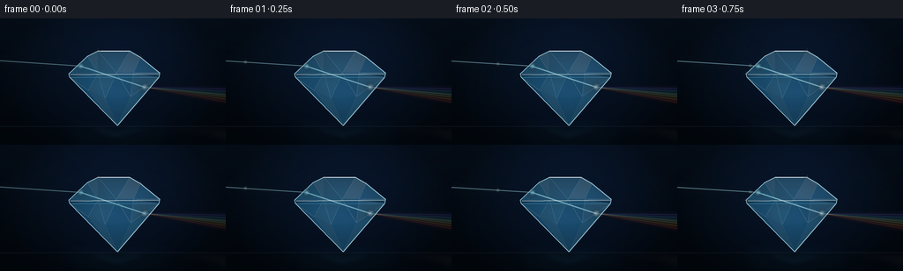
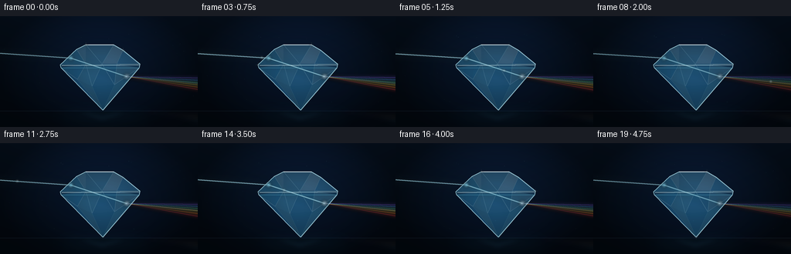
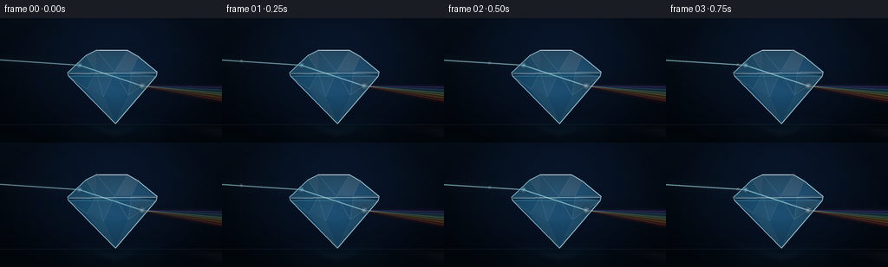
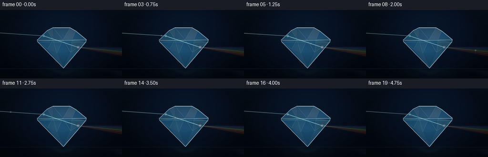

CODING AGENTS AS PIXEL WORLD MODELS
traex/GPT-5.6-Sol · phygen_089
点击播放 · 原生 RGB 像素
逐轮保存的候选
回放视频、检查图与代码变化。
每份候选均可单独播放。实际图片检查记录在下方工具轨迹中。
候选 01播放与检查图
点击播放 · 原生 RGB 像素


展开代码变化
--- 上一保存版本
+++ 本次保存版本
@@ -0,0 +1,219 @@
+from pathlib import Path
+import math
+import numpy as np
+from PIL import Image, ImageDraw, ImageFilter
+import artifact_io
+
+# Procedural, supersampled rendering of a laboratory prism/diamond scene.
+W, H, N = 256, 144, 20
+S = 4
+WW, HH = W*S, H*S
+rng = np.random.default_rng(8901)
+
+def sp(p):
+ return tuple(int(round(v*S)) for v in p)
+
+def poly(points):
+ return [sp(p) for p in points]
+
+def rgba_layer():
+ return Image.new("RGBA", (WW, HH), (0, 0, 0, 0))
+
+def glow_line(base, points, color, core_width, strength=1.0, blur=5.0, glow_width=None):
+ """A luminous anti-aliased polyline with a soft atmospheric halo."""
+ pts = [sp(p) for p in points]
+ if glow_width is None:
+ glow_width = max(core_width*2.5, 2.0)
+ halo = rgba_layer(); d = ImageDraw.Draw(halo)
+ a = int(color[3] * strength)
+ d.line(pts, fill=(*color[:3], min(255, a)), width=max(1, int(glow_width*S)), joint="curve")
+ halo = halo.filter(ImageFilter.GaussianBlur(blur*S))
+ base.alpha_composite(halo)
+ core = rgba_layer(); d = ImageDraw.Draw(core)
+ d.line(pts, fill=(*color[:3], min(255, int(color[3]*strength))),
+ width=max(1, int(core_width*S)), joint="curve")
+ base.alpha_composite(core)
+
+def radial_bloom(base, xy, radius, color, alpha=180):
+ layer = rgba_layer(); d = ImageDraw.Draw(layer)
+ x,y = sp(xy); r = int(radius*S)
+ d.ellipse((x-r,y-r,x+r,y+r), fill=(*color, alpha))
+ layer = layer.filter(ImageFilter.GaussianBlur(max(1, r//2)))
+ base.alpha_composite(layer)
+
+def draw_scene(fi):
+ t = fi / N
+ # Deep blue-black studio gradient and vignette, with a faint optical haze.
+ yy, xx = np.mgrid[0:HH, 0:WW]
+ xn, yn = xx/(WW-1), yy/(HH-1)
+ bg = np.zeros((HH,WW,4), dtype=np.uint8)
+ bg[...,0] = np.clip(3 + 5*(1-yn) + 2*np.exp(-((xn-.54)/.42)**2),0,255)
+ bg[...,1] = np.clip(9 + 12*(1-yn) + 5*np.exp(-((xn-.54)/.42)**2),0,255)
+ bg[...,2] = np.clip(17 + 21*(1-yn) + 12*np.exp(-((xn-.54)/.38)**2),0,255)
+ vign = np.clip(1 - 0.48*((xn-.5)**2/.28 + (yn-.48)**2/.40), .55, 1)
+ bg[...,:3] = (bg[...,:3] * vign[...,None]).astype(np.uint8)
+ bg[...,3] = 255
+ im = Image.fromarray(bg, "RGBA")
+
+ # Sparse floating dust: fixed positions, gently scintillating rather than jittering.
+ dust = rgba_layer(); dd = ImageDraw.Draw(dust)
+ for k in range(30):
+ x = float(rng_dust[k,0]); y = float(rng_dust[k,1])
+ a = int(8 + 15*(0.5+0.5*math.sin(2*math.pi*(t + rng_dust[k,2]))))
+ r = 0.22*S if k%4 else 0.38*S
+ dd.ellipse((x*S-r,y*S-r,x*S+r,y*S+r), fill=(135,194,226,a))
+ im.alpha_composite(dust)
+
+ # Black glass pedestal with subtle horizon and pool of reflected light.
+ floor = rgba_layer(); fd = ImageDraw.Draw(floor)
+ fd.rectangle((0,123*S,WW,HH), fill=(2,7,12,110))
+ fd.line((0,123*S,WW,123*S), fill=(91,145,172,20), width=1*S)
+ floor_glow = rgba_layer(); gd = ImageDraw.Draw(floor_glow)
+ gd.ellipse((68*S,117*S,202*S,140*S), fill=(30,110,148,25))
+ floor_glow = floor_glow.filter(ImageFilter.GaussianBlur(10*S))
+ floor.alpha_composite(floor_glow)
+ im.alpha_composite(floor)
+
+ # A restrained mirror-image suggestion under the pavilion.
+ refl = rgba_layer(); rd = ImageDraw.Draw(refl)
+ rd.polygon(poly([(102,126),(132,137),(165,126),(151,124),(132,128),(113,124)]),
+ fill=(67,151,184,18))
+ refl = refl.filter(ImageFilter.GaussianBlur(3*S)); im.alpha_composite(refl)
+
+ pulse = 0.86 + 0.10*math.sin(2*math.pi*(t*2.0-.12))
+ sweep = 0.8*math.sin(2*math.pi*t)
+ entry = (91.5, 54.2 + .25*sweep)
+ exitp = (164.0, 78.2 + .20*sweep)
+
+ # External incoming white beam.
+ optics = rgba_layer()
+ glow_line(optics, [(-12,47.2+sweep), entry], (100,214,255,82), 1.4, pulse, 7.0, 3.5)
+ glow_line(optics, [(-12,47.2+sweep), entry], (222,249,255,225), .48, pulse, 1.2, 1.2)
+
+ # Dispersion fan after the beam leaves the cut stone. Each band is tapered.
+ rainbow = [
+ ((246,55,78), 96.0), ((255,135,37),92.5), ((255,222,78),89.0),
+ ((71,224,153),85.7), ((58,162,255),82.5), ((153,93,255),79.6)
+ ]
+ rb = rgba_layer(); rbd = ImageDraw.Draw(rb)
+ # Atmospheric broad wedges, start together at the refracting facet.
+ for j,(c,yend) in enumerate(rainbow):
+ wob = .7*math.sin(2*math.pi*t + j*.5)
+ ye = yend + wob
+ rbd.polygon(poly([(exitp[0]-1,exitp[1]-1.0),(260,ye-2.1),(260,ye+2.1),(exitp[0]-1,exitp[1]+1.0)]),
+ fill=(*c, int(33*pulse)))
+ rb = rb.filter(ImageFilter.GaussianBlur(2.8*S)); optics.alpha_composite(rb)
+ for j,(c,yend) in enumerate(rainbow):
+ ye = yend + .7*math.sin(2*math.pi*t + j*.5)
+ glow_line(optics, [exitp,(261,ye)], (*c,105), .58, pulse, 2.4, 1.45)
+ # Thin pearly center makes the single incident beam / dispersed output relation clear.
+ glow_line(optics, [exitp,(261,87.8)], (235,250,255,95), .28, pulse, 1.8, .8)
+ im.alpha_composite(optics)
+
+ # Cast a subdued colored reflection from the outgoing spectrum onto the table.
+ caustic = rgba_layer(); cd = ImageDraw.Draw(caustic)
+ for j,(c,_) in enumerate(rainbow):
+ x0=166+j*8
+ cd.polygon(poly([(exitp[0],121),(257,126+j*2.2),(257,129+j*2.4),(x0,123)]), fill=(*c,12))
+ caustic = caustic.filter(ImageFilter.GaussianBlur(4*S)); im.alpha_composite(caustic)
+
+ # Main transparent brilliant-cut diamond silhouette.
+ outline = [(78,63),(99,43),(111,37),(147,37),(159,44),(181,62),(180,67),(133,122),(79,67)]
+ mask = Image.new("L",(WW,HH),0); ImageDraw.Draw(mask).polygon(poly(outline), fill=255)
+
+ glass = rgba_layer(); ga = np.zeros((HH,WW,4),dtype=np.uint8)
+ # Cool transparent volume: light around entry and center, denser at pavilion.
+ center = np.exp(-(((xx/S-131)/52)**2+((yy/S-72)/38)**2))
+ ga[...,0] = np.clip(26 + 24*center + 8*yn,0,255)
+ ga[...,1] = np.clip(77 + 55*center + 15*yn,0,255)
+ ga[...,2] = np.clip(105 + 80*center + 23*yn,0,255)
+ ga[...,3] = np.clip(72 + 24*center + 22*yn,0,255)
+ ga[...,3] = (ga[...,3].astype(np.float32)*(np.asarray(mask)/255)).astype(np.uint8)
+ glass = Image.fromarray(ga,"RGBA")
+ im.alpha_composite(glass)
+
+ # Faceted geometry: translucent triangular planes and crisp edge network.
+ facets = rgba_layer(); f = ImageDraw.Draw(facets)
+ facet_fills = [
+ ([(78,63),(99,43),(111,62)], (77,181,220,42)),
+ ([(99,43),(111,37),(111,62)], (183,239,249,37)),
+ ([(111,37),(147,37),(132,62),(111,62)], (153,226,242,30)),
+ ([(147,37),(159,44),(151,62),(132,62)], (224,251,255,39)),
+ ([(159,44),(181,62),(151,62)], (85,166,211,44)),
+ ([(79,67),(111,62),(100,82)], (39,133,178,52)),
+ ([(111,62),(132,62),(119,91),(100,82)], (120,215,231,30)),
+ ([(132,62),(151,62),(148,89),(119,91)], (51,149,195,35)),
+ ([(151,62),(180,67),(148,89)], (161,225,235,30)),
+ ([(79,67),(100,82),(133,122)], (28,102,153,49)),
+ ([(100,82),(119,91),(133,122)], (118,203,218,27)),
+ ([(119,91),(148,89),(133,122)], (37,129,176,40)),
+ ([(148,89),(180,67),(133,122)], (86,180,206,33)),
+ ]
+ for pts,c in facet_fills: f.polygon(poly(pts),fill=c)
+ # Fine facet seams.
+ seam=(170,229,242,69); seam2=(98,190,221,48)
+ for a,b in [((78,63),(181,62)),((79,67),(180,67)),((99,43),(111,62)),
+ ((111,37),(132,62)),((147,37),(132,62)),((159,44),(151,62)),
+ ((78,63),(111,62)),((181,62),(151,62)),((79,67),(100,82)),
+ ((111,62),(100,82)),((111,62),(119,91)),((132,62),(119,91)),
+ ((132,62),(148,89)),((151,62),(148,89)),((180,67),(148,89)),
+ ((100,82),(133,122)),((119,91),(133,122)),((148,89),(133,122))]:
+ f.line([sp(a),sp(b)],fill=seam if a[1]<68 else seam2,width=max(1,S//2))
+ im.alpha_composite(facets)
+
+ # Refracted ray inside the diamond, clipped exactly to the gem volume.
+ internal = rgba_layer()
+ glow_line(internal, [entry,exitp], (83,209,255,130), 2.1, pulse, 5.0, 4.4)
+ # slight spectral boundary inside glass
+ glow_line(internal, [(entry[0]+1,entry[1]+.4),exitp], (245,252,255,245), .62, pulse, .8, 1.0)
+ ia = np.asarray(internal).copy()
+ ia[...,3] = (ia[...,3].astype(np.uint16) * (np.asarray(mask,dtype=np.uint16)) // 255).astype(np.uint8)
+ im.alpha_composite(Image.fromarray(ia,"RGBA"))
+
+ # Rim catches, girdle, and animated facet highlights.
+ rim = rgba_layer(); rr = ImageDraw.Draw(rim)
+ rr.line(poly(outline+[outline[0]]), fill=(192,243,253,178), width=max(2,S))
+ rr.line([sp((80,64)),sp((180,63))], fill=(231,254,255,150), width=max(2,S))
+ rr.line([sp((80,67)),sp((180,67))], fill=(59,164,202,115), width=max(1,S//2))
+ rr.line([sp((111,37)),sp((147,37))], fill=(244,255,255,202), width=max(2,S))
+ # Bright entry/exit points emphasize the physical interfaces.
+ im.alpha_composite(rim)
+ radial_bloom(im, entry, 3.3, (167,239,255), int(145*pulse))
+ radial_bloom(im, exitp, 3.5, (229,247,255), int(150*pulse))
+ points = [(111,37),(147,37),(99,43),(159,44),(78,63),(181,62),(133,122),(119,91)]
+ # Two moving scintillations, periodic but continuous over the loop.
+ for k in range(2):
+ idx = int((fi//3 + k*3) % len(points))
+ px,py = points[idx]
+ phase = (fi%3)/3
+ alpha = int(170*(1-phase))
+ spark = rgba_layer(); sd = ImageDraw.Draw(spark)
+ sd.line((int((px-3)*S),int(py*S),int((px+3)*S),int(py*S)),fill=(238,255,255,alpha),width=max(1,S//2))
+ sd.line((int(px*S),int((py-3)*S),int(px*S),int((py+3)*S)),fill=(238,255,255,alpha),width=max(1,S//2))
+ spark = spark.filter(ImageFilter.GaussianBlur(.45*S)); im.alpha_composite(spark)
+
+ # A small traveling intensity packet makes the light's passage readable in motion.
+ q = (fi % 10) / 9.0
+ route = [(-8,47.2+sweep),entry,exitp,(260,87.8)]
+ lens=[]; total=0
+ for a,b in zip(route[:-1],route[1:]):
+ l=math.hypot(b[0]-a[0],b[1]-a[1]); lens.append(l); total+=l
+ dist=q*total; pos=route[-1]
+ for a,b,l in zip(route[:-1],route[1:],lens):
+ if dist<=l:
+ u=dist/l; pos=(a[0]*(1-u)+b[0]*u,a[1]*(1-u)+b[1]*u); break
+ dist-=l
+ radial_bloom(im,pos,2.1,(225,251,255),80)
+
+ # Downsample gives smooth optical edges while preserving fine ray cores.
+ out = im.convert("RGB").resize((W,H),Image.Resampling.LANCZOS)
+ return np.asarray(out,dtype=np.uint8)
+
+# Stable particle field created once; generation remains deterministic.
+rng_dust = np.column_stack([
+ rng.uniform(5,251,30), rng.uniform(15,119,30), rng.uniform(0,1,30)
+])
+
+frames = np.stack([draw_scene(i) for i in range(N)], axis=0)
+artifact_io.save(frames, Path(__file__).resolve().parent)
+print(f"saved {frames.shape[0]} RGB frames at {frames.shape[2]}x{frames.shape[1]}")
候选 02播放与检查图
点击播放 · 原生 RGB 像素


展开代码变化
--- 上一保存版本
+++ 本次保存版本
@@ -87,8 +87,8 @@
# External incoming white beam.
optics = rgba_layer()
- glow_line(optics, [(-12,47.2+sweep), entry], (100,214,255,82), 1.4, pulse, 7.0, 3.5)
- glow_line(optics, [(-12,47.2+sweep), entry], (222,249,255,225), .48, pulse, 1.2, 1.2)
+ glow_line(optics, [(-12,47.2+sweep), entry], (112,220,255,135), 1.7, pulse, 7.0, 4.2)
+ glow_line(optics, [(-12,47.2+sweep), entry], (235,253,255,255), .58, pulse, 1.2, 1.25)
# Dispersion fan after the beam leaves the cut stone. Each band is tapered.
rainbow = [
@@ -101,13 +101,13 @@
wob = .7*math.sin(2*math.pi*t + j*.5)
ye = yend + wob
rbd.polygon(poly([(exitp[0]-1,exitp[1]-1.0),(260,ye-2.1),(260,ye+2.1),(exitp[0]-1,exitp[1]+1.0)]),
- fill=(*c, int(33*pulse)))
+ fill=(*c, int(62*pulse)))
rb = rb.filter(ImageFilter.GaussianBlur(2.8*S)); optics.alpha_composite(rb)
for j,(c,yend) in enumerate(rainbow):
ye = yend + .7*math.sin(2*math.pi*t + j*.5)
- glow_line(optics, [exitp,(261,ye)], (*c,105), .58, pulse, 2.4, 1.45)
+ glow_line(optics, [exitp,(261,ye)], (*c,190), .72, pulse, 2.7, 1.7)
# Thin pearly center makes the single incident beam / dispersed output relation clear.
- glow_line(optics, [exitp,(261,87.8)], (235,250,255,95), .28, pulse, 1.8, .8)
+ glow_line(optics, [exitp,(261,87.8)], (240,253,255,125), .30, pulse, 1.8, .8)
im.alpha_composite(optics)
# Cast a subdued colored reflection from the outgoing spectrum onto the table.
可观测工具轨迹
实际执行的命令与返回图片。
命令 1exit 0
/bin/bash -lc "ls -la && printf '\\n--- prompt.txt ---\\n' && cat prompt.txt && printf '\\n--- GENERATION_RULES.md ---\\n' && cat GENERATION_RULES.md && printf '\\n--- task_spec.json ---\\n' && cat task_spec.json"
命令 2exit 0
/bin/bash -lc "sed -n '1,240p' artifact_io.py && printf '\\n--- template excerpt ---\\n' && sed -n '1,180p' player_template.html"
命令 3exit 0
/bin/bash -lc "cat > generate.py <<'PY'
from pathlib import Path
import math
import numpy as np
from PIL import Image, ImageDraw, ImageFilter
import artifact_io
# Procedural, supersampled rendering of a laboratory prism/diamond scene.
W, H, N = 256, 144, 20
S = 4
WW, HH = W*S, H*S
rng = np.random.default_rng(8901)
def sp(p):
return tuple(int(round(v*S)) for v in p)
def poly(points):
return [sp(p) for p in points]
def rgba_layer():
return Image.new(\"RGBA\", (WW, HH), (0, 0, 0, 0))
def glow_line(base, points, color, core_width, strength=1.0, blur=5.0, glow_width=None):
\"\"\"A luminous anti-aliased polyline with a soft atmospheric halo.\"\"\"
pts = [sp(p) for p in points]
if glow_width is None:
glow_width = max(core_width*2.5, 2.0)
halo = rgba_layer(); d = ImageDraw.Draw(halo)
a = int(color[3] * strength)
d.line(pts, fill=(*color[:3], min(255, a)), width=max(1, int(glow_width*S)), joint=\"curve\")
halo = halo.filter(ImageFilter.GaussianBlur(blur*S))
base.alpha_composite(halo)
core = rgba_layer(); d = ImageDraw.Draw(core)
d.line(pts, fill=(*color[:3], min(255, int(color[3]*strength))),
width=max(1, int(core_width*S)), joint=\"curve\")
base.alpha_composite(core)
def radial_bloom(base, xy, radius, color, alpha=180):
layer = rgba_layer(); d = ImageDraw.Draw(layer)
x,y = sp(xy); r = int(radius*S)
d.ellipse((x-r,y-r,x+r,y+r), fill=(*color, alpha))
layer = layer.filter(ImageFilter.GaussianBlur(max(1, r//2)))
base.alpha_composite(layer)
def draw_scene(fi):
t = fi / N
# Deep blue-black studio gradient and vignette, with a faint optical haze.
yy, xx = np.mgrid[0:HH, 0:WW]
xn, yn = xx/(WW-1), yy/(HH-1)
bg = np.zeros((HH,WW,4), dtype=np.uint8)
bg[...,0] = np.clip(3 + 5*(1-yn) + 2*np.exp(-((xn-.54)/.42)**2),0,255)
bg[...,1] = np.clip(9 + 12*(1-yn) + 5*np.exp(-((xn-.54)/.42)**2),0,255)
bg[...,2] = np.clip(17 + 21*(1-yn) + 12*np.exp(-((xn-.54)/.38)**2),0,255)
vign = np.clip(1 - 0.48*((xn-.5)**2/.28 + (yn-.48)**2/.40), .55, 1)
bg[...,:3] = (bg[...,:3] * vign[...,None]).astype(np.uint8)
bg[...,3] = 255
im = Image.fromarray(bg, \"RGBA\")
# Sparse floating dust: fixed positions, gently scintillating rather than jittering.
dust = rgba_layer(); dd = ImageDraw.Draw(dust)
for k in range(30):
x = float(rng_dust[k,0]); y = float(rng_dust[k,1])
a = int(8 + 15*(0.5+0.5*math.sin(2*math.pi*(t + rng_dust[k,2]))))
r = 0.22*S if k%4 else 0.38*S
dd.ellipse((x*S-r,y*S-r,x*S+r,y*S+r), fill=(135,194,226,a))
im.alpha_composite(dust)
# Black glass pedestal with subtle horizon and pool of reflected light.
floor = rgba_layer(); fd = ImageDraw.Draw(floor)
fd.rectangle((0,123*S,WW,HH), fill=(2,7,12,110))
fd.line((0,123*S,WW,123*S), fill=(91,145,172,20), width=1*S)
floor_glow = rgba_layer(); gd = ImageDraw.Draw(floor_glow)
gd.ellipse((68*S,117*S,202*S,140*S), fill=(30,110,148,25))
floor_glow = floor_glow.filter(ImageFilter.GaussianBlur(10*S))
floor.alpha_composite(floor_glow)
im.alpha_composite(floor)
# A restrained mirror-image suggestion under the pavilion.
refl = rgba_layer(); rd = ImageDraw.Draw(refl)
rd.polygon(poly([(102,126),(132,137),(165,126),(151,124),(132,128),(113,124)]),
fill=(67,151,184,18))
refl = refl.filter(ImageFilter.GaussianBlur(3*S)); im.alpha_composite(refl)
pulse = 0.86 + 0.10*math.sin(2*math.pi*(t*2.0-.12))
sweep = 0.8*math.sin(2*math.pi*t)
entry = (91.5, 54.2 + .25*sweep)
exitp = (164.0, 78.2 + .20*sweep)
# External incoming white beam.
optics = rgba_layer()
glow_line(optics, [(-12,47.2+sweep), entry], (100,214,255,82), 1.4, pulse, 7.0, 3.5)
glow_line(optics, [(-12,47.2+sweep), entry], (222,249,255,225), .48, pulse, 1.2, 1.2)
# Dispersion fan after the beam leaves the cut stone. Each band is tapered.
rainbow = [
((246,55,78), 96.0), ((255,135,37),92.5), ((255,222,78),89.0),
((71,224,153),85.7), ((58,162,255),82.5), ((153,93,255),79.6)
]
rb = rgba_layer(); rbd = ImageDraw.Draw(rb)
# Atmospheric broad wedges, start together at the refracting facet.
for j,(c,yend) in enumerate(rainbow):
wob = .7*math.sin(2*math.pi*t + j*.5)
ye = yend + wob
rbd.polygon(poly([(exitp[0]-1,exitp[1]-1.0),(260,ye-2.1),(260,ye+2.1),(exitp[0]-1,exitp[1]+1.0)]),
fill=(*c, int(33*pulse)))
rb = rb.filter(ImageFilter.GaussianBlur(2.8*S)); optics.alpha_composite(rb)
for j,(c,yend) in enumerate(rainbow):
ye = yend + .7*math.sin(2*math.pi*t + j*.5)
glow_line(optics, [exitp,(261,ye)], (*c,105), .58, pulse, 2.4, 1.45)
# Thin pearly center makes the single incident beam / dispersed output relation clear.
glow_line(optics, [exitp,(261,87.8)], (235,250,255,95), .28, pulse, 1.8, .8)
im.alpha_composite(optics)
# Cast a subdued colored reflection from the outgoing spectrum onto the table.
caustic = rgba_layer(); cd = ImageDraw.Draw(caustic)
for j,(c,_) in enumerate(rainbow):
x0=166+j*8
cd.polygon(poly([(exitp[0],121),(257,126+j*2.2),(257,129+j*2.4),(x0,123)]), fill=(*c,12))
caustic = caustic.filter(ImageFilter.GaussianBlur(4*S)); im.alpha_composite(caustic)
# Main transparent brilliant-cut diamond silhouette.
outline = [(78,63),(99,43),(111,37),(147,37),(159,44),(181,62),(180,67),(133,122),(79,67)]
mask = Image.new(\"L\",(WW,HH),0); ImageDraw.Draw(mask).polygon(poly(outline), fill=255)
glass = rgba_layer(); ga = np.zeros((HH,WW,4),dtype=np.uint8)
# Cool transparent volume: light around entry and center, denser at pavilion.
center = np.exp(-(((xx/S-131)/52)**2+((yy/S-72)/38)**2))
ga[...,0] = np.clip(26 + 24*center + 8*yn,0,255)
ga[...,1] = np.clip(77 + 55*center + 15*yn,0,255)
ga[...,2] = np.clip(105 + 80*center + 23*yn,0,255)
ga[...,3] = np.clip(72 + 24*center + 22*yn,0,255)
ga[...,3] = (ga[...,3].astype(np.float32)*(np.asarray(mask)/255)).astype(np.uint8)
glass = Image.fromarray(ga,\"RGBA\")
im.alpha_composite(glass)
# Faceted geometry: translucent triangular planes and crisp edge network.
facets = rgba_layer(); f = ImageDraw.Draw(facets)
facet_fills = [
([(78,63),(99,43),(111,62)], (77,181,220,42)),
([(99,43),(111,37),(111,62)], (183,239,249,37)),
([(111,37),(147,37),(132,62),(111,62)], (153,226,242,30)),
([(147,37),(159,44),(151,62),(132,62)], (224,251,255,39)),
([(159,44),(181,62),(151,62)], (85,166,211,44)),
([(79,67),(111,62),(100,82)], (39,133,178,52)),
([(111,62),(132,62),(119,91),(100,82)], (120,215,231,30)),
([(132,62),(151,62),(148,89),(119,91)], (51,149,195,35)),
([(151,62),(180,67),(148,89)], (161,225,235,30)),
([(79,67),(100,82),(133,122)], (28,102,153,49)),
([(100,82),(119,91),(133,122)], (118,203,218,27)),
([(119,91),(148,89),(133,122)], (37,129,176,40)),
([(148,89),(180,67),(133,122)], (86,180,206,33)),
]
for pts,c in facet_fills: f.polygon(poly(pts),fill=c)
# Fine facet seams.
seam=(170,229,242,69); seam2=(98,190,221,48)
for a,b in [((78,63),(181,62)),((79,67),(180,67)),((99,43),(111,62)),
((111,37),(132,62)),((147,37),(132,62)),((159,44),(151,62)),
((78,63),(111,62)),((181,62),(151,62)),((79,67),(100,82)),
((111,62),(100,82)),((111,62),(119,91)),((132,62),(119,91)),
((132,62),(148,89)),((151,62),(148,89)),((180,67),(148,89)),
((100,82),(133,122)),((119,91),(133,122)),((148,89),(133,122))]:
f.line([sp(a),sp(b)],fill=seam if a[1]<68 else seam2,width=max(1,S//2))
im.alpha_composite(facets)
# Refracted ray inside the diamond, clipped exactly to the gem volume.
internal = rgba_layer()
glow_line(internal, [entry,exitp], (83,209,255,130), 2.1, pulse, 5.0, 4.4)
# slight spectral boundary inside glass
glow_line(internal, [(entry[0]+1,entry[1]+.4),exitp], (245,252,255,245), .62, pulse, .8, 1.0)
ia = np.asarray(internal).copy()
ia[...,3] = (ia[...,3].astype(np.uint16) * (np.asarray(mask,dtype=np.uint16)) // 255).astype(np.uint8)
im.alpha_composite(Image.fromarray(ia,\"RGBA\"))
# Rim catches, girdle, and animated facet highlights.
rim = rgba_layer(); rr = ImageDraw.Draw(rim)
rr.line(poly(outline+[outline[0]]), fill=(192,243,253,178), width=max(2,S))
rr.line([sp((80,64)),sp((180,63))], fill=(231,254,255,150), width=max(2,S))
rr.line([sp((80,67)),sp((180,67))], fill=(59,164,202,115), width=max(1,S//2))
rr.line([sp((111,37)),sp((147,37))], fill=(244,255,255,202), width=max(2,S))
# Bright entry/exit points emphasize the physical interfaces.
im.alpha_composite(rim)
radial_bloom(im, entry, 3.3, (167,239,255), int(145*pulse))
radial_bloom(im, exitp, 3.5, (229,247,255), int(150*pulse))
points = [(111,37),(147,37),(99,43),(159,44),(78,63),(181,62),(133,122),(119,91)]
# Two moving scintillations, periodic but continuous over the loop.
for k in range(2):
idx = int((fi//3 + k*3) % len(points))
px,py = points[idx]
phase = (fi%3)/3
alpha = int(170*(1-phase))
spark = rgba_layer(); sd = ImageDraw.Draw(spark)
sd.line((int((px-3)*S),int(py*S),int((px+3)*S),int(py*S)),fill=(238,255,255,alpha),width=max(1,S//2))
sd.line((int(px*S),int((py-3)*S),int(px*S),int((py+3)*S)),fill=(238,255,255,alpha),width=max(1,S//2))
spark = spark.filter(ImageFilter.GaussianBlur(.45*S)); im.alpha_composite(spark)
# A small traveling intensity packet makes the light's passage readable in motion.
q = (fi % 10) / 9.0
route = [(-8,47.2+sweep),entry,exitp,(260,87.8)]
lens=[]; total=0
for a,b in zip(route[:-1],route[1:]):
l=math.hypot(b[0]-a[0],b[1]-a[1]); lens.append(l); total+=l
dist=q*total; pos=route[-1]
for a,b,l in zip(route[:-1],route[1:],lens):
if dist<=l:
u=dist/l; pos=(a[0]*(1-u)+b[0]*u,a[1]*(1-u)+b[1]*u); break
dist-=l
radial_bloom(im,pos,2.1,(225,251,255),80)
# Downsample gives smooth optical edges while preserving fine ray cores.
out = im.convert(\"RGB\").resize((W,H),Image.Resampling.LANCZOS)
return np.asarray(out,dtype=np.uint8)
# Stable particle field created once; generation remains deterministic.
rng_dust = np.column_stack([
rng.uniform(5,251,30), rng.uniform(15,119,30), rng.uniform(0,1,30)
])
frames = np.stack([draw_scene(i) for i in range(N)], axis=0)
artifact_io.save(frames, Path(__file__).resolve().parent)
print(f\"saved {frames.shape[0]} RGB frames at {frames.shape[2]}x{frames.shape[1]}\")
PY
python generate.py
ls -lh pixels.npz inspection.png index.html frames/00.png"命令 4exit 0
/bin/bash -lc 'python generate.py'
命令 5exit 0
/bin/bash -lc "python - <<'PY'
import numpy as np
from pathlib import Path
p=np.load('pixels.npz')['pixels']
assert p.shape==(144,256,20) and p.dtype==np.uint32
required=['generate.py','pixels.npz','index.html','inspection.png','transition_check.png']
assert all(Path(x).is_file() for x in required)
assert len(list(Path('frames').glob('*.png')))==20
print('validated:',p.shape,p.dtype,'20 PNG frames')
PY"视觉工具实际返回图片 1

视觉工具实际返回图片 2

保存候选 2 份；完成命令 5 次；可验证图片返回 2 张。原始 API 响应与完整日志保留在本地。